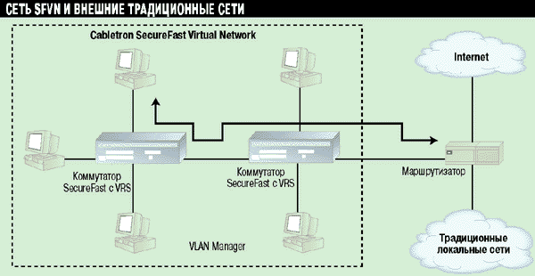

Классификация методов повышения эффективности маршрутизации
Постановка задачи маршрутизации
В классической постановке задача маршрутизации подразделяется на следующие подзадачи:- управление таблицами маршрутизации, то есть их создание и поддержание в актуальном состоянии;
- определение маршрута для каждого входящего сетевого пакета, то есть выяснение номера выходного порта и MAC-адреса следующего элемента маршрута (следующего маршрутизатора или оконечной системы) по целевому адресу сетевого уровня;
- перенаправление каждого пакета, то есть замена целевого MAC-адреса на адрес следующего элемента маршрута, уменьшение на единицу поля TTL (Time to Live – оставшееся время жизни пакета), пересчет контрольной суммы заголовка и передача пакета в выходной порт;
- применение к каждому пакету дополнительных сервисов (поддержка классов обслуживания, разграничение межсетевого доступа, учет и т.д.).
Методы повышения эффективности маршрутизации можно подразделить на следующие категории:
- Повышение производительности микросхем, используемых в маршрутизаторах. Такой подход позволяет ускорить выполнение каждой из четырех подзадач маршрутизации (см. предыдущий пункт). Особенно важно применение заказных микросхем, обслуживающих процесс определения маршрутов.
- Распараллеливание обработки потоков данных. Распараллеливание может носить различный характер. При распараллеливании между подзадачами разные аппаратные компоненты отвечают за управление таблицами маршрутизации, за определение маршрутов и т.д. При распараллеливании между совокупностями пакетов происходит одновременная обработка нескольких пакетов в разных устройствах. Обычно такое распараллеливание реализуют на уровне интерфейсных модулей, то есть каждый модуль независимо выполняет определение маршрута, перенаправление и применение дополнительных сервисов. Наконец, может применяться конвейеризация обработки отдельных пакетов.
- Оптимизация программных компонентов маршрутизаторов. Такая оптимизация направлена в первую очередь на ускорение поиска в таблице маршрутизации за счет реализации новых алгоритмов или за счет применения схем с кэшированием, когда поиск самого длинного подходящего префикса в большой таблице маршрутизации заменяется поиском ключа фиксированной длины в таблице меньших размеров.
- Применение протоколов, упрощающих маршрутизацию. Этот подход также направлен в первую очередь на ускорение определения маршрута, однако здесь в работу маршрутизатора вносится нестандартность, связанная с поддержкой новых протоколов.
- Применение протоколов, позволяющих избежать маршрутизации. Это наиболее радикальный путь, меняющий саму постановку задачи маршрутизации.
Число протоколов, которые реально необходимо поддерживать, уменьшается не только на сетевом (третьем), но и на канальном (втором) уровне эталонной семиуровневой модели. Фактически два протокола – Ethernet и ATM – обслуживают весь доступный диапазон скоростей, обеспечивая единый формат пакетов (ячеек). Это также упрощает реализацию высокопроизводительных маршрутизаторов и удешевляет их.
Повышение производительности микросхем, используемых в маршрутизаторах
Практически все производители маршрутизаторов применяют в своих продуктах специально разработанные заказные микросхемы. Считается, что при программной реализации маршрутизации на базе универсальных RISC-процессоров не удастся поднять производительность выше миллиона пакетов в секунду.Как правило, повышение производительности микросхем используется в сочетании с другими мерами. Так, компания Neo Networks в маршрутизаторе StreamProcessor 2400 встроила в заказные микросхемы около 1000 RISC-процессоров. Это позволило применить подходы, характерные для архитектур с массовым параллелизмом, когда вычислительная мощь поддерживает сложные программные решения.
Компания Torrent Networking Technologies использует заказные микросхемы в совокупности с новым алгоритмом поиска в таблице маршрутизации, уменьшающим число обращений к памяти. В результате появляется возможность отказаться от схем с кэшированием, гарантируя гигабитные скорости маршрутизации независимо от характера трафика.
Распараллеливание обработки потоков данных
С заказными микросхемами или без них, без распараллеливания обработки потоков данных, поступающих в маршрутизатор через многочисленные интерфейсы с многомегабитными или гигабитными скоростями, не обойтись. Представляется естественным размещение маршрутизирующих микросхем на интерфейсных модулях, поскольку при этом достигается масштабируемость по отношению к наращиванию числа интерфейсов и увеличению суммарных потоков данных.CoreBuilder 3500
Именно так поступила компания Bay Networks в семействе маршрутизирующих коммутаторов Accelar и корпорация 3Com в коммутаторе третьего уровня CoreBuilder 3500. Для быстрого перемещения пакетов между входным и выходным интерфейсами применяются аппаратные решения, разработанные для высокопроизводительных коммутаторов.
Оптимизация программных компонентов маршрутизаторов
В последние 2-3 года внедрение коммутаторов позволило существенно поднять пропускную способность локальных сетей, повысить качество сетевого сервиса. К сожалению, маршрутизация существенно сложнее, чем коммутация на уровне 2 эталонной семиуровневой модели взаимодействия открытых систем.Во-первых, приходится анализировать большее число полей в заголовках пакетов. Во-вторых, обработка адреса получателя является более сложной (в таблице маршрутизации нужно найти максимально длинный префикс, входящий в адрес получателя). В-третьих, необходимо применить правила фильтрации, модифицировать учетную информацию, поставить пакет в выходную очередь в соответствии с его приоритетом. В-четвертых, нужно произвести изменение некоторых полей пакета (изменить адрес уровня доступа к среде передачи и уменьшить оставшееся время жизни – поле TTL). Наконец, приходится обмениваться информацией с другими маршрутизаторами. Столь сложные действия могут и должны стать объектом оптимизации.
Основная идея оптимизации, пропагандируемая в первую очередь компанией Cisco Systems и развиваемая ею в рамках технологии NetFlow Switching, состоит в том, чтобы от обработки сетевых пакетов как независимых сущностей перейти к действиям с потоками данных.

Потоки данных выявляются с привлечением информации транспортного уровня, после чего поиск в таблице маршрутизации (равно как и действия по фильтрации) производится только для первого пакета потока. Последующие пакеты потока перенаправляются после быстрого поиска в небольшом кэше.
Отмечу, что данная оптимизация является естественной основой для разделения функций между центральным модулем, занимающимся управлением таблицами маршрутизации и определением маршрутов, и интерфейсными модулями, осуществляющими перенаправление. Очевидно, работа интерфейсных модулей может быть распараллелена. Кроме того, при перенаправлении можно использовать технологии, отработанные в коммутаторах (перенаправление со скоростью среды передачи – их основная функция).
Применение протоколов, упрощающих маршрутизацию
На идее кэширования основываются и попытки упростить маршрутизацию за счет привлечения новых протоколов. Тэговая коммутация (Tag Switching), предложенная компанией Cisco Systems и внесенная в качестве проекта стандарта в рабочую группу IETF по многопротокольной меточной коммутации (MPLS), ориентирована на крупных поставщиков Интернет-услуг и операторов связи, контролирующих области концентрации Интернет-трафика. Маршрутизаторы, входящие в такие области, ассоциируют тэги (небольшого) фиксированного размера с имеющимися маршрутами.Когда с периферии сети в область концентрации поступает пакет, на основе анализа целевого адреса к нему добавляется тэг, обеспечивающий в дальнейшем быстрое определение маршрута (просмотр небольшой таблицы тэгов фиксированного размера произвести проще, чем поиск максимального совпадающего префикса в длинной таблице маршрутизации). На выходе из области концентрации тэг удаляется и определение маршрута вновь выполняется обычным образом. Подчеркнем, что тэговая коммутация не зависит от протоколов более низкого уровня (с передачей ячеек или кадров, с установлением виртуальных соединений или без такового).
Технология IP Navigator компании Cascade Communications также рассчитана на крупных поставщиков Интернет-услуг. Ее идея состоит в том, чтобы сделать области концентрации IP трафика коммутируемыми, сосредоточив маршрутизацию на периферии областей. Опираясь на предложенные компанией технологии Virtual Network Navigator (VNN) и Multipoint-to-Point Tunneling, входной периферийный маршрутизатор анализирует целевой IP-адрес пакета и перенаправляет его сразу на выходной маршрутизатор области (через ряд промежуточных коммутаторов).
Технология IP-коммутации (IP Switching), развиваемая компанией Ipsilon Networks, основана на модификации программного обеспечения IP-маршрутизаторов и ATM-коммутаторов и их “спаривании”, в результате которого маршрутизатор берет на себя функции контроллера, управляющего коммутатором с помощью протокола General Switch Management Protocol (GSMP). Как и в технологии NetFlow Switching, по первым IPпакетам выявляются потоки данных, отображаемые на локальные ATM-соединения. При общении между IP-коммутаторами используется предложенный компанией протокол управления потоками (Ipsilon Flow Management Protocol, IFMP).
Подчеркну, что технология IP Switching не предусматривает установления обычных для ATM “сквозных” виртуальных соединений. Вместо этого соседние устройства “локально” договариваются между собой о коммутации IP-потоков.
Применение протоколов, позволяющих избежать маршрутизации
Избежать маршрутизации можно в тех случаях, когда между взаимодействующими узлами локальной сети, входящими, быть может, в различные IP-подсети, существует путь, обслуживаемый коммутаторами.Идея технологии Fast IP, предложенной корпорацией 3Com, состоит в том, чтобы взаимодействующие узлы обменялись адресами уровня доступа к среде передачи (MAC-адресами) и использовали их в дальнейшем общении. Первые пакеты при пересечении границ подсетей обычным образом проходят через маршрутизаторы, зато дальнейшие обслуживаются коммутаторами или по крайней мере меньшим числом маршрутизаторов.
Коммутатор 3COM SuperStack3 4200 26-Port
Для полноценной реализации этой идеи требуется поддержка целого ряда новых протоколов, но основным является Next Hop Resolution Protocol (NHRP) – протокол выяснения инициатором сетевого взаимодействия MAC-адреса партнера по общению, требующий повышенного интеллекта не от маршрутизаторов, а от сетевых карт и базового программного обеспечения компьютеров. Иными словами, здесь модернизируется не ядро, а периферия сетей.
Компания Cabletron Systems предложила свою архитектуру больших коммутируемых сетей – SecureFast. По замыслу компании такие сети должны быть более эффективными и управляемыми, чем сети, построенные на традиционных маршрутизаторах. Встроенное программное обеспечение коммутаторов, поддерживающих технологию SecureFast, и дополнительный продукт – VLAN Manager – обеспечивают работу сервиса виртуальной маршрутизации (Virtual Routing Service).
Отметим, что благодаря использованию собственного протокола Virtual Link State Protocol (VLSP), коммутаторы SecureFast способны поддерживать топологии с избыточными связями, что снимает ограничения, характерные для алгоритма остовного дерева.

В результате может быть повышена надежность работы сети, обеспечена более высокая суммарная пропускная способность и балансировк
нагрузки между каналами. Отметим также, что архитектура SecureFast не ограничена рамками IP-протокола; поддерживаются и другие
сетевые протоколы, например, IPX.
Взаимодействие между сетью SFVN и традиционными сетями.